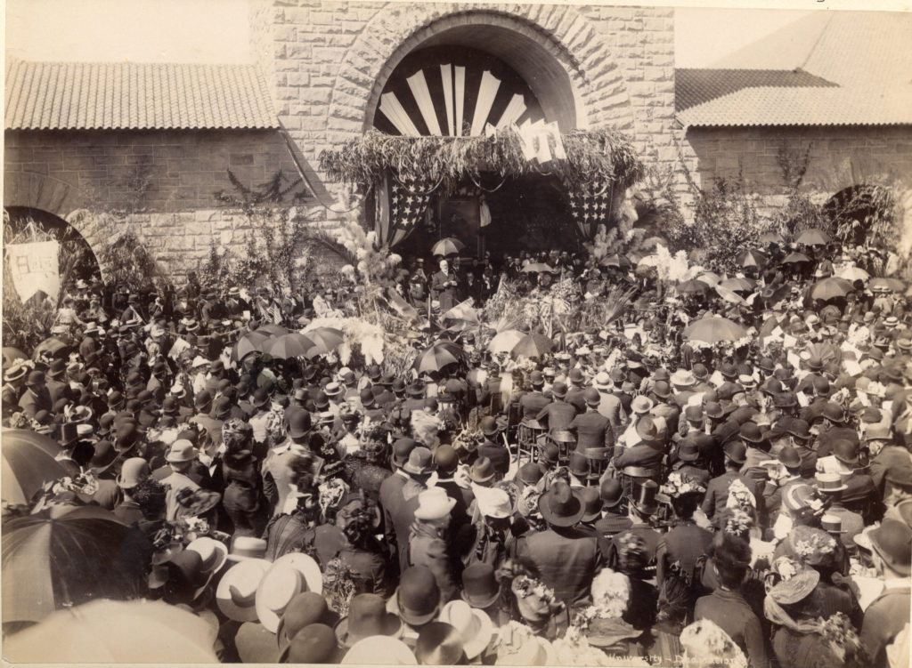

Leland Stanford Purchases Land
1876
Leland Stanford purchases 650 acres of land for a stock farm for his
horses. This farm will become the core of Stanford University campus. Future purchases
by Leland Stanford will add to the property, leading to over 8000 acres total.
University Established

1891
Stanford University is established. The first class has 559 men and women.
There are 15 faculty members the first year, with 49 by the second year. Frederick Law Olmsted,
the architect for New York's Central Park, designs the Stanford campus.
Earthquake Devastates Campus
1906
The great San Francisco Earthquake of 1906 devastates the campus,
permanently changing Stanford's architectural character. An archway over the entrance to the
quad is destroyed. The church is badly damaged and its bell tower is destroyed. See
the Stanford University
and the 1906 Earthquake for photographs and additional information.